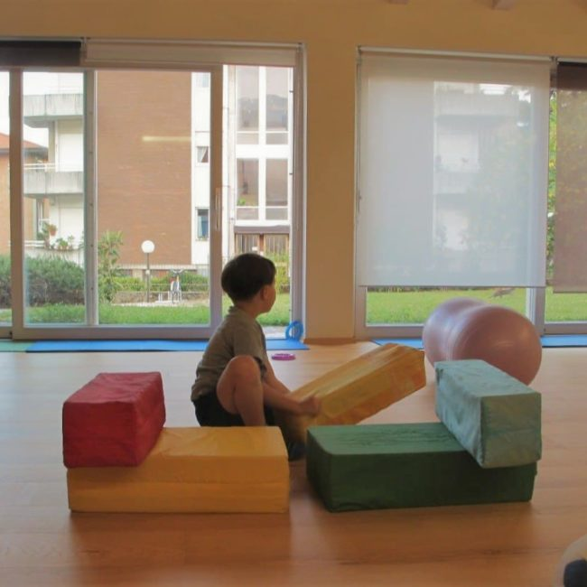
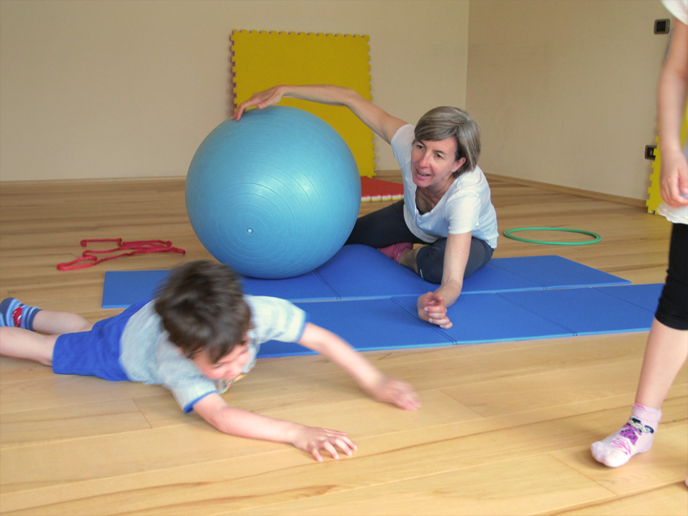

Psicomotricità
Gioco e movimento per sostenere lo sviluppo armonico, l’espressione e la relazione.
ALia Studio · Rovereto
Uno spazio accogliente dove il gioco, il movimento e l’ascolto accompagnano bambini e famiglie nel loro percorso.
Scopri i percorsiParliamone
I servizi
Ogni proposta considera corpo, emozioni, pensiero e relazione come parti di un unico percorso.
Gioco e movimento per sostenere lo sviluppo armonico, l’espressione e la relazione.
Esperienze per accompagnare il gesto grafico, il disegno e l’apprendimento della scrittura.
Un tempo di ascolto e consapevolezza per ritrovare equilibrio tra corpo e mente.

Chi sono
Sono psicomotricista e titolare di ALia Studio. Da oltre vent’anni accompagno bambini, ragazzi, adulti e famiglie con uno sguardo attento alla relazione fra mente e corpo.
Conosci il mio percorsoDove siamo
La sala di ALia Studio si trova a Rovereto, in via Comel 3.
Scopri la sala